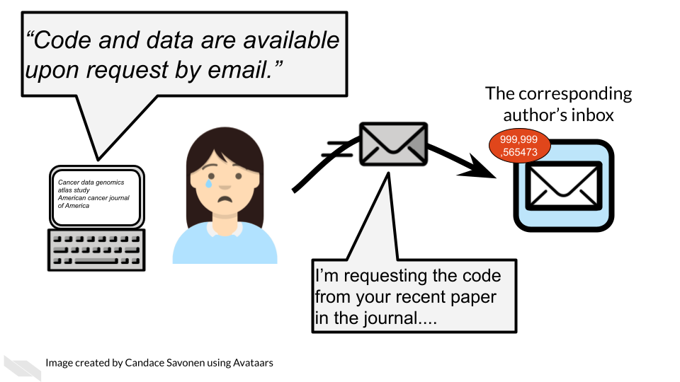

Chapter 2 Data Sharing is Important
Sharing data is critical for optimizing the advancement of scientific understanding. Now that labs all over the world are producing massive amounts of data, there are many discoveries that can be made by simply re-using/re-analyzing this existing data.
The concept of data re-use is so important, that in January 2023, after years of development, the NIH released new guidance and began requiring new practices for data management and sharing. See the announcement here.
See this course for more information about how to comply with this policy.
Note that many institutes and funding agencies or mechanisms have requirements about how your data can be shared. Typically, data sharing of protected data also requires Institutional Review Board (IRB) approval before the study is conducted. Ensure that you are following those requirements before you share your data. A later section in this course will cover data privacy.
There’s so many excellent reasons to put your data in a repository whether or not a journal requires it:
Sharing your data…
- Makes your project more transparent and thus more likely to be trusted and cited. In fact one study found that articles with links to the data used (in a repository) were cited more than articles without such information or other forms of data sharing (colavizza_citation_2020?).

- Helps your relieve your own workload so your email inbox isn’t loaded by requests you probably don’t have time to respond to.

- Allows others to gain even more insights from your data which shows funders that your data will be used to its maximum potential.

Disclaimer: The thoughts and ideas presented in this course are not official NIH guidance and are not a substituted for legal or ethical advice and are only meant to give you a starting point for gathering information data management.